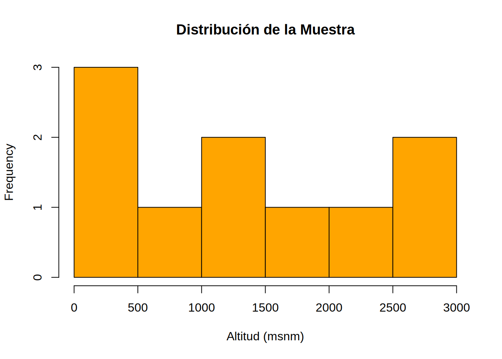

Código
# #| include: false
source("./docs/j_eval_j_plot.r")# #| include: false
source("./docs/j_eval_j_plot.r")Este capítulo presenta una introducción práctica y comparativa a los lenguajes Python, R y Julia, enfocada en el uso de comandos básicos y en la lectura e interpretación de resultados en consola. El objetivo no es profundizar en programación avanzada, sino ofrecer una puerta de entrada común para estudiantes que se inician en el uso de herramientas computacionales para geocomputación.
j_eval() para ejecutar instrucciones generalesj_plot() para generar gráficosPor esta razón, en el documento encontrarás dos tipos de bloques relacionados con Julia:
j_eval() o j_plot(), que son los que realmente ejecutan el código.label, lo que permite su correcta identificación y reutilización.En este capítulo aprenderás a:
Este contenido servirá como base para los capítulos posteriores, donde se utilizarán estos lenguajes para la creación de mapas, análisis de datos espaciales y visualización geográfica.
| Tarea | Descripción | Python | R | Julia |
|---|---|---|---|---|
| Ver ayuda general | Abre la documentación interactiva | help() |
help.start() |
? en REPL |
| Ayuda de función | Documentación de un comando | help(sum) |
?mean |
?sum |
| Ver ejemplos | Código de ejemplo de una función | Docstrings | example("lapply") |
Docstrings |
| Vignettes / guías | Tutoriales extendidos | obj.__doc__ |
browseVignettes() |
?Modulo |
| Demo | Ejecutar ejemplos | libreria.ejemplos()* |
demo() |
include("test")* |
Nota sobre los Docstrings: En Python y Julia, la documentación y los ejemplos de uso residen directamente dentro del código fuente en bloques llamados Docstrings. Al ejecutar los comandos de ayuda (help() o @doc), el intérprete extrae estos comentarios y los muestra en la terminal, permitiendo que el usuario vea ejemplos reales de implementación de inmediato sin necesidad de manuales externos.
Nota sobre los Demos (*): A diferencia de R, Python y Julia no tienen un comando universal demo(). El asterisco indica que el acceso a ejemplos depende de la librería. En Python, se suele explorar la propiedad __doc__ o módulos de datasets. En Julia, se acostumbra a inspeccionar la carpeta de instalación mediante pathof(Modulo) para encontrar archivos de prueba o ejemplos.
# help() busca y muestra el "Docstring" de la función
help(sum)
# Ayuda sobre un módulo completo para ver sus funciones disponibles
import math
help(math)
# dir() lista todos los métodos y atributos (la "anatomía" del objeto)
import pandas as pd
dir(pd.DataFrame)
# pydoc renderiza la documentación técnica en la terminal
import pydoc
print(pydoc.render_doc("math"))
# Ejemplo de "Demo" en Python (vía datasets de una librería SIG)
import geopandas as gpd
# Listamos los mapas de ejemplo que vienen con la librería
print(gpd.datasets.available)# Inicia el servidor de ayuda local en formato HTML
help.start()
# Acceso rápido a la documentación de una función específica
?mean
help("plot")
# Ejecuta automáticamente el código de ejemplo del manual
example("lapply")
# --- Vignettes y Demos ---
# Abre el índice de tutoriales detallados (vignettes)
browseVignettes()
# Listar guías del paquete 'stars' (análisis de cubos de datos)
# Nota: presione "q" al final de la lista para liberar la consola
vignette(package = "stars")
# Visualizar una vignette específica por su nombre
vignette("stars1", package = "stars")
# Importante: requiere dispositivo gráfico (ej. httpgd::hgd())
# presione "q" al final de la lista para salir
demo()
# Demos específicos de librerías de Geomática
library(sf)
demo("nc", package = "sf")
demo("ggplot", package = "sf")# Este comando (?) solo funciona dentro del REPL interactivo
# ?sum
# En Quarto usamos la macro @doc para acceder al Docstring
@doc sum
@doc println
# Julia usa docstrings con ejemplos y ayuda integrados, similar a Python
# Para encontrar "Demos", localizamos la carpeta del paquete en el disco
using DataFrames
println("Ubicación del código: ", pathof(DataFrames))| Tarea | Descripción | Python | R | Julia |
|---|---|---|---|---|
| Instalar paquete | Agregar librerías externas | pip3 install ... |
install.packages() |
Pkg.add() |
| Cargar paquete | Habilitar funciones del paquete | import ... |
library() |
using ... |
# En terminal usamos pip3
# para asegurar la versión de Python 3.x
# pip3 install colorama
# Dentro de python usamos el prefijo "!"
# !pip3 install colorama
# Cargamos solo lo necesario para manejar colores en consola
from colorama import Fore, Style
print("Librería cargada en Python")
# Aparecerán caracteres especiales al inicio del texto
# porque el HTML no entiende la instrucción colorear en rojo
# Fore.RED aplica el color; Style.RESET_ALL evita que el color "manche" las siguientes líneas
print(Fore.RED + "Librería cargada en Python" + Style.RESET_ALL)# Este comando carga el paquete con require() o lo instala
# si no existe
if (!require("crayon", character.only = TRUE)) {
install.packages("crayon", dependencies = TRUE, repos = "https://cran.rstudio.com/")
}
# Activamos el paquete para la sesión actual de R
library(crayon)
# cat() interpreta los códigos de escape ANSI que generan los colores
cat(red("Librería cargada en R"))# PASO 1: CON ASIS. Ejecutamos la instalación y mostramos texto limpio.
cat(j_eval(r"-(
using Pkg
# Verificamos si 'Crayons' ya está en el proyecto; si no, lo instalamos
if !haskey(Pkg.dependencies(), Base.UUID("a83e43d3-9d41-5979-9952-4e448995a975"))
Pkg.add("Crayons")
end
using Crayons
# Retornamos solo el mensaje normal para que se integre al Markdown
return "Librería cargada en Julia\n"
)-"))Nota: El siguiente código no puede tener
#|results: asisporque se daña elpanel-tabsetal tener código de escape ANSI (\033[31m...). Esto implica que verá unas líneas de código HTML que debe ignorar.
# PASO 2: SIN ASIS. Aislamos el código ANSI para proteger el Tabset.
resultado_color <- j_eval(r"-(
# Como la sesión de Julia sigue abierta, 'Crayons' ya está cargado.
# Solo capturamos el texto con el código de escape ANSI (color rojo).
mensaje_color = string(Crayon(foreground=:red), "Librería cargada en Julia (con escape ANSI)")
return mensaje_color
)-")
# Quarto encierra esta salida en un bloque de código seguro
cat(resultado_color)El manejo eficiente de vectores y matrices es el corazón del procesamiento ráster. A continuación, se presenta una comparativa de cómo se declaran y manipulan los objetos básicos.
| Estructura | Descripción | Python | R | Julia |
|---|---|---|---|---|
| Vector | Colección lineal ordenada | v = np.array([1, 2, 3]) |
v <- c(1, 2, 3) |
v = [1, 2, 3] |
| Matriz | Arreglo bidimensional (Ráster) | m = np.zeros((3,3)) o np.array([[...]]) |
m <- matrix(0, 3, 3) |
m = zeros(3, 3) o [... ; ...] |
| Diccionario | Pares clave-valor (Metadatos) | {key: val} ej. {"id": 1} |
list(k=v) ej. list(id = 1) |
Dict(k=>v) ej. Dict("id"=>1) |
| Data Frame | Estructura tabular (Atributos) | pd.DataFrame() |
data.frame() |
DataFrame(...) |
| Indexación | Posición del primer elemento | Inicia en 0 | Inicia en 1 | Inicia en 1 |
Para entender por qué usamos diferentes estructuras de datos, es útil ver cómo se mapean con los componentes de un Sistema de Información Geográfica:

Como se observa en la Figura 10.1, la Matriz es la estructura reina para el análisis ráster, mientras que los DataFrames son los que nos permiten realizar consultas sobre las bases de datos de predios o coberturas.
Esta es la fuente más frecuente de errores. Mientras que en Python el primer píxel de una banda satelital es el [0,0], en R y Julia es el [1,1]. Un error de este tipo desplazará todos sus resultados una celda, invalidando análisis de precisión o cambios de cobertura.
Nota sobre estructuras: En Geomática, los vectores suelen representar coordenadas o valores de píxeles, mientras que los diccionarios son fundamentales para manejar atributos (como en formato JSON o GeoJSON). Las tablas (DataFrames) son el estándar para bases de datos alfanuméricas de predios, municipios o estaciones climáticas.
# #| eval: false
# 1. Listas: colecciones mutables de elementos
# Ejemplo: Códigos DANE de departamentos (Antioquia, Cundinamarca, Valle)
codigos = [5, 25, 76]
type(codigos)<class 'list'># 2. Diccionarios: Estructuras de clave-valor
# Ideal para representar metadatos de un departamento
metadatos = {
"departamento": ["Antioquia", "Cundinamarca", "Valle"],
"area_km2": [63612, 22623, 22140],
"capital": ["Medellín", "Bogotá", "Cali"]
}
type(metadatos)<class 'dict'># 3. DataFrames: Para manejar tablas de atributos SIG
import pandas as pd
df_colombia = pd.DataFrame(metadatos)
type(df_colombia)<class 'pandas.core.frame.DataFrame'># Visualizamos el resumen técnico de la tabla
print(df_colombia.info())<class 'pandas.core.frame.DataFrame'>
RangeIndex: 3 entries, 0 to 2
Data columns (total 3 columns):
# Column Non-Null Count Dtype
--- ------ -------------- -----
0 departamento 3 non-null object
1 area_km2 3 non-null int64
2 capital 3 non-null object
dtypes: int64(1), object(2)
memory usage: 204.0+ bytes
None# #| eval: false
# 1. Vectores: La unidad básica en R (todos los elementos del mismo tipo)
# Códigos DANE de departamentos
codigos <- c(5, 25, 76)
class(codigos)[1] "numeric"# 2. Listas: Pueden contener objetos de diferentes tipos y tamaños
# En R, las listas con nombres funcionan como los diccionarios
metadatos <- list(
departamento = c("Antioquia", "Cundinamarca", "Valle"),
area_km2 = c(63612, 22623, 22140),
capital = c("Medellín", "Bogotá", "Cali")
)
class(metadatos)[1] "list"# 3. Data Frame: La estructura tabular nativa por excelencia
df_colombia <- data.frame(metadatos)
class(df_colombia)[1] "data.frame"# str() muestra la estructura interna del objeto (equivalente a info() en Python)
str(df_colombia)'data.frame': 3 obs. of 3 variables:
$ departamento: chr "Antioquia" "Cundinamarca" "Valle"
$ area_km2 : num 63612 22623 22140
$ capital : chr "Medellín" "Bogotá" "Cali"# #| eval: false
j_eval('
# 1. Vectores: Se definen con corchetes (similar a Python)
codigos = [5, 25, 76]
typeof(codigos)
# 2. Diccionarios: Se usa el operador => para asociar clave y valor
metadatos = Dict(
"departamento" => ["Antioquia", "Cundinamarca", "Valle"],
"area_km2" => [63612, 22623, 22140]
)
typeof(metadatos)
# 3. Tablas: En Julia Base se pueden usar vectores de Tuplas Nombradas,
# pero en Geomática siempre usaremos la librería DataFrames
using DataFrames
df_colombia = DataFrame(
departamento = ["Antioquia", "Cundinamarca", "Valle"],
area_km2 = [63612, 22623, 22140],
capital = ["Medellín", "Bogotá", "Cali"]
)
typeof(df_colombia)
# describe() da un resumen estadístico de la tabla
println(describe(df_colombia))
')Starting Julia ...julia> # 1. Vectores: Se definen con corchetes (similar a Python)
julia> codigos = [5, 25, 76]
3-element Vector{Int64}:
5
25
76
julia> typeof(codigos)
Vector{Int64} (alias for Array{Int64, 1})
julia> # 2. Diccionarios: Se usa el operador => para asociar clave y valor
julia> metadatos = Dict( "departamento" => ["Antioquia", "Cundinamarca", "Valle"], "area_km2" => [63612, 22623, 22140] )
Dict{String, Vector} with 2 entries:
"departamento" => ["Antioquia", "Cundinamarca", "Valle"]
"area_km2" => [63612, 22623, 22140]
julia> typeof(metadatos)
Dict{String, Vector}
julia> # 3. Tablas: En Julia Base se pueden usar vectores de Tuplas Nombradas,
julia> # pero en Geomática siempre usaremos la librería DataFrames
julia> using DataFrames
julia> df_colombia = DataFrame( departamento = ["Antioquia", "Cundinamarca", "Valle"], area_km2 = [63612, 22623, 22140], capital = ["Medellín", "Bogotá", "Cali"] )
3×3 DataFrame
Row │ departamento area_km2 capital
│ String Int64 String
─────┼──────────────────────────────────
1 │ Antioquia 63612 Medellín
2 │ Cundinamarca 22623 Bogotá
3 │ Valle 22140 Cali
julia> typeof(df_colombia)
DataFrame
julia> # describe() da un resumen estadístico de la tabla
julia> println(describe(df_colombia))
3×7 DataFrame
Row │ variable mean min median max nmissing eltype
│ Symbol Union… Any Union… Any Int64 DataType
─────┼─────────────────────────────────────────────────────────────────────────
1 │ departamento Antioquia Valle 0 String
2 │ area_km2 36125.0 22140 22623.0 63612 0 Int64
3 │ capital Bogotá Medellín 0 String
| Tarea | Descripción | Python | R | Julia |
|---|---|---|---|---|
| Directorio | Ruta de trabajo actual | os.getcwd() |
getwd() |
pwd() |
| Tipo / clase | Tipo de estructura | type() |
class() |
typeof() |
| Estructura | Resumen técnico | df.info() |
str() |
describe(df) |
| Dimensiones | Filas y columnas | df.shape |
dim() |
size() |
| Primeras filas | Vista rápida inicial | df.head(n) |
head(df, n) |
first(df, n) |
| Frecuencias | Conteo de categorías | value_counts() |
table() |
countmap() |
| Unir filas | Concatenar vertical | pd.concat(..., axis=0) |
rbind() |
vcat() |
| Omitir NA | Limpiar datos faltantes | dropna() |
na.omit() |
dropmissing() |
| Ordenar | Organizar por columna | sort_values() |
order() / arrange() |
sort() |
# #| eval: false
import os
import numpy as np
import pandas as pd
# 1. Gestión del entorno de trabajo
print(f"Ruta actual: {os.getcwd()}")Ruta actual: /home/rstudio/work/01_prog_sig# 2. Creación de datos: Departamentos de Colombia (Población en millones, Área en km2)
data = {
"depto": ["Antioquia", "Cundinamarca", "Valle", "Bolívar", "Atlántico"],
"pob_2023": [6.8, 3.2, 4.6, 2.2, 2.8],
"area_km2": [63612, 22623, 22140, 25978, 3388],
"region": ["Andina", "Andina", "Pacífica", "Caribe", "Caribe"]
}
df = pd.DataFrame(data)
# 3. Inspección de la tabla
print(df.info()) # Resumen de tipos de datos y memoria<class 'pandas.core.frame.DataFrame'>
RangeIndex: 5 entries, 0 to 4
Data columns (total 4 columns):
# Column Non-Null Count Dtype
--- ------ -------------- -----
0 depto 5 non-null object
1 pob_2023 5 non-null float64
2 area_km2 5 non-null int64
3 region 5 non-null object
dtypes: float64(1), int64(1), object(2)
memory usage: 292.0+ bytes
Noneprint(f"Forma: {df.shape}") # (filas, columnas)Forma: (5, 4)print(df.head(3)) # Ver los primeros 3 registros depto pob_2023 area_km2 region
0 Antioquia 6.8 63612 Andina
1 Cundinamarca 3.2 22623 Andina
2 Valle 4.6 22140 Pacífica# 4. Análisis de frecuencias (¿Cuántos deptos por región?)
print(df["region"].value_counts())region
Andina 2
Caribe 2
Pacífica 1
Name: count, dtype: int64# 5. Operaciones de unión
# Crear un nuevo registro para un depto faltante
nuevo_depto = pd.DataFrame({"depto":["Chocó"], "pob_2023":[0.5], "area_km2":[46530], "region":["Pacífica"]})
# Concatenar verticalmente (axis=0 es por filas)
df_extendido = pd.concat([df, nuevo_depto], axis=0, ignore_index=True)
# 6. Ordenamiento
# Ordenar por población de mayor a menor
df_sorted = df_extendido.sort_values(by="pob_2023", ascending=False)
print(df_sorted) depto pob_2023 area_km2 region
0 Antioquia 6.8 63612 Andina
2 Valle 4.6 22140 Pacífica
1 Cundinamarca 3.2 22623 Andina
4 Atlántico 2.8 3388 Caribe
3 Bolívar 2.2 25978 Caribe
5 Chocó 0.5 46530 Pacífica# 7. Localización por condición (¿Dónde la población es > 4M?)
indices = np.where(df_extendido["pob_2023"] > 4.0)
print(f"Índices detectados: {indices}")Índices detectados: (array([0, 2]),)# #| eval: false
# 1. Gestión del entorno
getwd()[1] "/home/rstudio/work/01_prog_sig"# 2. Datos de ejemplo (Departamentos de Colombia)
df <- data.frame(
depto = c("Antioquia", "Cundinamarca", "Valle", "Bolívar", "Atlántico"),
pob_2023 = c(6.8, 3.2, 4.6, 2.2, 2.8),
area_km2 = c(63612, 22623, 22140, 25978, 3388),
region = c("Andina", "Andina", "Pacífica", "Caribe", "Caribe")
)
# 3. Inspección básica
str(df) # Estructura del objeto'data.frame': 5 obs. of 4 variables:
$ depto : chr "Antioquia" "Cundinamarca" "Valle" "Bolívar" ...
$ pob_2023: num 6.8 3.2 4.6 2.2 2.8
$ area_km2: num 63612 22623 22140 25978 3388
$ region : chr "Andina" "Andina" "Pacífica" "Caribe" ...dim(df) # Dimensiones (filas y columnas)[1] 5 4head(df, 3) # Primeras 3 filas depto pob_2023 area_km2 region
1 Antioquia 6.8 63612 Andina
2 Cundinamarca 3.2 22623 Andina
3 Valle 4.6 22140 Pacífica# 4. Frecuencias (Equivalente a value_counts)
table(df$region)
Andina Caribe Pacífica
2 2 1 # 5. Uniones verticales
# Creamos el registro adicional
nuevo <- data.frame(depto="Chocó", pob_2023=0.5, area_km2=46530, region="Pacífica")
# rbind une por filas (necesita que las columnas se llamen igual)
df_extendido <- rbind(df, nuevo)
# 6. Ordenamiento
# order() devuelve los índices; los usamos para reindexar el dataframe
df_sorted <- df_extendido[order(-df_extendido$pob_2023), ]
print(df_sorted) depto pob_2023 area_km2 region
1 Antioquia 6.8 63612 Andina
3 Valle 4.6 22140 Pacífica
2 Cundinamarca 3.2 22623 Andina
5 Atlántico 2.8 3388 Caribe
4 Bolívar 2.2 25978 Caribe
6 Chocó 0.5 46530 Pacífica# 7. Alternativa con dplyr (El estándar de "Tidyverse" para manipular tablas)
library(dplyr)
Attaching package: 'dplyr'The following objects are masked from 'package:stats':
filter, lagThe following objects are masked from 'package:base':
intersect, setdiff, setequal, union# --- Opción A: Paso a paso con variables intermedias ---
# Útil para depurar y entender qué sucede en cada etapa
# Paso 1: Ordenar la tabla de departamentos por población de forma descendente
df_ordenado <- arrange(df_extendido, desc(pob_2023))
print(df_ordenado) depto pob_2023 area_km2 region
1 Antioquia 6.8 63612 Andina
2 Valle 4.6 22140 Pacífica
3 Cundinamarca 3.2 22623 Andina
4 Atlántico 2.8 3388 Caribe
5 Bolívar 2.2 25978 Caribe
6 Chocó 0.5 46530 Pacífica# Paso 2: Filtrar los resultados para quedarnos solo con los mayores a 4M
df_final <- filter(df_ordenado, pob_2023 > 4.0)
print(df_final) depto pob_2023 area_km2 region
1 Antioquia 6.8 63612 Andina
2 Valle 4.6 22140 Pacífica# --- Opción B: Uso de Operadores Pipe (Flujo continuo) ---
# El pipe permite "pasar" el resultado de una función a la siguiente sin crear variables nuevas.
# 1. Pipe de la librería dplyr (el clásico: %>%)
# Se lee como: "Toma df_extendido, ENTONCES ordena, ENTONCES filtra"
df_extendido %>%
arrange(desc(pob_2023)) %>%
filter(pob_2023 > 4.0) depto pob_2023 area_km2 region
1 Antioquia 6.8 63612 Andina
2 Valle 4.6 22140 Pacífica# 2. Pipe nativo de R (disponible desde la versión 4.1: |>)
# Es más eficiente en memoria y no depende de cargar librerías extra
df_extendido |>
arrange(desc(pob_2023)) |>
filter(pob_2023 > 4.0) depto pob_2023 area_km2 region
1 Antioquia 6.8 63612 Andina
2 Valle 4.6 22140 Pacífica# #| eval: false
j_eval('
using DataFrames
# Recreamos la tabla en el entorno de Julia
df = DataFrame(
depto = ["Antioquia", "Cundinamarca", "Valle", "Bolívar", "Atlántico"],
pob_2023 = [6.8, 3.2, 4.6, 2.2, 2.8],
area_km2 = [63612, 22623, 22140, 25978, 3388],
region = ["Andina", "Andina", "Pacífica", "Caribe", "Caribe"]
)
# Ejecutamos inspección y unión
nuevo = DataFrame(depto=["Chocó"], pob_2023=[0.5], area_km2=[46530], region=["Pacífica"])
df_ext = vcat(df, nuevo)
# Ordenar por población y mostrar
println(sort(df_ext, :pob_2023, rev=true))
')julia> using DataFrames
julia> # Recreamos la tabla en el entorno de Julia
julia> df = DataFrame( depto = ["Antioquia", "Cundinamarca", "Valle", "Bolívar", "Atlántico"], pob_2023 = [6.8, 3.2, 4.6, 2.2, 2.8], area_km2 = [63612, 22623, 22140, 25978, 3388], region = ["Andina", "Andina", "Pacífica", "Caribe", "Caribe"] )
5×4 DataFrame
Row │ depto pob_2023 area_km2 region
│ String Float64 Int64 String
─────┼────────────────────────────────────────────
1 │ Antioquia 6.8 63612 Andina
2 │ Cundinamarca 3.2 22623 Andina
3 │ Valle 4.6 22140 Pacífica
4 │ Bolívar 2.2 25978 Caribe
5 │ Atlántico 2.8 3388 Caribe
julia> # Ejecutamos inspección y unión
julia> nuevo = DataFrame(depto=["Chocó"], pob_2023=[0.5], area_km2=[46530], region=["Pacífica"])
1×4 DataFrame
Row │ depto pob_2023 area_km2 region
│ String Float64 Int64 String
─────┼──────────────────────────────────────
1 │ Chocó 0.5 46530 Pacífica
julia> df_ext = vcat(df, nuevo)
6×4 DataFrame
Row │ depto pob_2023 area_km2 region
│ String Float64 Int64 String
─────┼────────────────────────────────────────────
1 │ Antioquia 6.8 63612 Andina
2 │ Cundinamarca 3.2 22623 Andina
3 │ Valle 4.6 22140 Pacífica
4 │ Bolívar 2.2 25978 Caribe
5 │ Atlántico 2.8 3388 Caribe
6 │ Chocó 0.5 46530 Pacífica
julia> # Ordenar por población y mostrar
julia> println(sort(df_ext, :pob_2023, rev=true))
6×4 DataFrame
Row │ depto pob_2023 area_km2 region
│ String Float64 Int64 String
─────┼────────────────────────────────────────────
1 │ Antioquia 6.8 63612 Andina
2 │ Valle 4.6 22140 Pacífica
3 │ Cundinamarca 3.2 22623 Andina
4 │ Atlántico 2.8 3388 Caribe
5 │ Bolívar 2.2 25978 Caribe
6 │ Chocó 0.5 46530 Pacífica
En el análisis espacial, estas operaciones son la base para calcular distancias, transformar coordenadas o procesar índices de vegetación (NDVI). A continuación, comparamos la sintaxis para las funciones matemáticas más comunes.
| Tarea | Descripción | Python | R | Julia |
|---|---|---|---|---|
| División entera | Cociente sin decimales | // |
%/% |
div() |
| Módulo | Residuo de la división | % |
%% |
% |
| Raíz cuadrada | Cálculo de \(x^{1/2}\) | math.sqrt() |
sqrt() |
sqrt() |
| Logaritmo | Logaritmo natural (\(ln\)) | math.log() |
log() |
log() |
| Constantes | Valores de \(\pi\) y \(e\) | math.pi, math.e |
pi, exp(1) |
pi, exp(1) |
# #| eval: false
import math
# 1. Aritmética entera (Útil para indexación de matrices)
print(f"División entera (5 // 2): {5 // 2}")División entera (5 // 2): 2print(f"Residuo/Módulo (5 % 2): {5 % 2}")Residuo/Módulo (5 % 2): 1# 2. Constantes matemáticas universales
print(f"Número e: {math.e}")Número e: 2.718281828459045print(f"Número pi: {math.pi}")Número pi: 3.141592653589793# 3. Funciones matemáticas (Requieren el módulo math)
print(f"Raíz cuadrada de 2: {math.sqrt(2)}")Raíz cuadrada de 2: 1.4142135623730951print(f"Logaritmo natural de 3: {math.log(3)}")Logaritmo natural de 3: 1.0986122886681098print(f"Logaritmo base 10 de 3: {math.log(3, 10)}")Logaritmo base 10 de 3: 0.47712125471966244# 4. Valor absoluto (Distancia sin dirección)
print(f"Absoluto de -3.4: {abs(-3.4)}")Absoluto de -3.4: 3.4# #| eval: false
# 1. Aritmética entera
cat("División entera (5 %/% 2):", 5 %/% 2, "\n")División entera (5 %/% 2): 2 cat("Residuo/Módulo (5 %% 2):", 5 %% 2, "\n")Residuo/Módulo (5 %% 2): 1 # 2. Constantes (pi es nativo, e se obtiene con exp)
cat("Número e (exp(1)):", exp(1), "\n")Número e (exp(1)): 2.718282 cat("Número pi:", pi, "\n")Número pi: 3.141593 # 3. Funciones matemáticas (Nativas en Base R)
cat("Raíz cuadrada de 2:", sqrt(2), "\n")Raíz cuadrada de 2: 1.414214 cat("Logaritmo natural de 3:", log(3), "\n")Logaritmo natural de 3: 1.098612 cat("Logaritmo base 10 de 3:", log(3, 10), "\n")Logaritmo base 10 de 3: 0.4771213 # 4. Valor absoluto
cat("Absoluto de -3.4:", abs(-3.4), "\n")Absoluto de -3.4: 3.4 # #| eval: false
j_eval('
# Ejecución de operaciones matemáticas vía j_eval
println("División entera Julia: ", div(5, 2))
println("Residuo Julia: ", 5 % 2)
println("Raíz de 2: ", sqrt(2))
println("Log natural 3: ", log(3))
println("Log base 10: ", log(10, 3)) # Inversión de argumentos frente a R/Python
println("Absoluto: ", abs(-3.4))
println("Pi: ", pi)
')julia> # Ejecución de operaciones matemáticas vía j_eval
julia> println("División entera Julia: ", div(5, 2))
División entera Julia: 2
julia> println("Residuo Julia: ", 5 % 2)
Residuo Julia: 1
julia> println("Raíz de 2: ", sqrt(2))
Raíz de 2: 1.4142135623730951
julia> println("Log natural 3: ", log(3))
Log natural 3: 1.0986122886681098
julia> println("Log base 10: ", log(10, 3)) # Inversión de argumentos frente a R/Python
Log base 10: 0.47712125471966244
julia> println("Absoluto: ", abs(-3.4))
Absoluto: 3.4
julia> println("Pi: ", pi)
Pi: π
| Tarea | Descripción | Python | R | Julia |
|---|---|---|---|---|
| Leer CSV | Cargar tabla desde texto/archivo | pd.read_csv() |
read.csv() |
CSV.read() |
| Escribir CSV | Guardar tabla en disco | df.to_csv() |
write.csv() |
CSV.write() |
Para este ejercicio, utilizaremos una técnica de simulación de archivos en memoria. Esto es extremadamente útil en programación SIG para procesar datos que vienen de servicios web (APIs) antes de guardarlos físicamente.
# #| eval: false
import pandas as pd
from io import StringIO
# Simulamos el contenido de un archivo CSV con municipios y altitudes (msnm)
csv_data = """
municipio,altitud
Bogota,2625
Medellin,1495
Cali,1018
Quibdo,43
"""
# StringIO convierte un texto en un "objeto de archivo" que pandas puede leer
df = pd.read_csv(StringIO(csv_data))
# Mostramos el resultado cargado
print(df) municipio altitud
0 Bogota 2625
1 Medellin 1495
2 Cali 1018
3 Quibdo 43
# Guardamos en el disco (index=False evita que se guarde la columna de índices)
df.to_csv("municipios_altitud.csv", index=False)# #| eval: false
# Contenido simulado
csv_data <- "
municipio,altitud
Bogota,2625
Medellin,1495
Cali,1018
Quibdo,43
"
# textConnection crea un flujo de lectura a partir de la cadena de texto
con <- textConnection(csv_data)
df <- read.csv(con)
# Es buena práctica cerrar la conexión después de usarla
close(con)
# Visualizamos la tabla
print(df) municipio altitud
1 Bogota 2625
2 Medellin 1495
3 Cali 1018
4 Quibdo 43# Escribimos en el disco (row.names=FALSE para evitar la columna adicional de números)
write.csv(df, "municipios_altitud.csv", row.names = FALSE)# #| eval: false
j_eval('
using CSV
using DataFrames
csv_data = "
municipio,altitud
Bogota,2625
Medellin,1495
Cali,1018
Quibdo,43
"
# Cargamos el string como DataFrame usando el buffer de memoria
df = CSV.read(IOBuffer(csv_data), DataFrame)
println("Tabla cargada en Julia:")
println(df)
# Escritura física
CSV.write("municipios_altitud.csv", df)
')julia> using CSV
julia> using DataFrames
julia> csv_data = " municipio,altitud Bogota,2625 Medellin,1495 Cali,1018 Quibdo,43 "
"\nmunicipio,altitud\nBogota,2625\nMedellin,1495\nCali,1018\nQuibdo,43\n"
julia> # Cargamos el string como DataFrame usando el buffer de memoria
julia> df = CSV.read(IOBuffer(csv_data), DataFrame)
4×2 DataFrame
Row │ municipio altitud
│ String15 Int64
─────┼────────────────────
1 │ Bogota 2625
2 │ Medellin 1495
3 │ Cali 1018
4 │ Quibdo 43
julia> println("Tabla cargada en Julia:")
Tabla cargada en Julia:
julia> println(df)
4×2 DataFrame
Row │ municipio altitud
│ String15 Int64
─────┼────────────────────
1 │ Bogota 2625
2 │ Medellin 1495
3 │ Cali 1018
4 │ Quibdo 43
julia> # Escritura física
julia> CSV.write("municipios_altitud.csv", df)
"municipios_altitud.csv"
En esta sección aprenderemos a extraer subconjuntos de datos. En Geomática, esto es vital para aislar, por ejemplo, municipios que superen una altitud crítica o departamentos que pertenecen a una región específica.
| Tarea | Descripción | Python | R | Julia |
|---|---|---|---|---|
| Seleccionar filas | Elegir registros por posición | df.iloc[0:2] |
df[1:2, ] |
df[1:2, :] |
| Filtrar por condición | Subset basado en reglas | df[df["altitud"] > 1000] |
df[df$altitud > 1000, ] |
filter(row -> ...) |
# #| eval: false
import pandas as pd
# Datos de municipios colombianos con su altitud (msnm)
df = pd.DataFrame({
"municipio": ["Bogotá", "Medellín", "Cali", "Quibdó", "Barranquilla"],
"altitud": [2625, 1495, 1018, 43, 18],
"departamento": ["Cundinamarca", "Antioquia", "Valle", "Chocó", "Atlántico"]
})
# 1. Seleccionar filas por posición (índices 0 y 1)
# iloc permite acceso puramente posicional
primeros_dos = df.iloc[0:2]
print("Primeros dos municipios:\n", primeros_dos)Primeros dos municipios:
municipio altitud departamento
0 Bogotá 2625 Cundinamarca
1 Medellín 1495 Antioquia# 2. Filtrar por condición (Municipios de "Tierras Altas" > 1500 msnm)
tierras_altas = df[df["altitud"] > 1500]
print("\nMunicipios en tierras altas:\n", tierras_altas)
Municipios en tierras altas:
municipio altitud departamento
0 Bogotá 2625 Cundinamarca
# 3. Filtrado con múltiples condiciones (Andinos y con altitud > 1000)
# Usamos & para 'y' lógico
andinos_altos = df[(df["altitud"] > 1000) & (df["departamento"] != "Chocó")]# #| eval: false
df <- data.frame(
municipio = c("Bogotá", "Medellín", "Cali", "Quibdó", "Barranquilla"),
altitud = c(2625, 1495, 1018, 43, 18),
departamento = c("Cundinamarca", "Antioquia", "Valle", "Chocó", "Atlántico")
)
# 1. Seleccionar filas por posición (En R los índices inician en 1)
primeros_dos <- df[1:2, ]
print(primeros_dos) municipio altitud departamento
1 Bogotá 2625 Cundinamarca
2 Medellín 1495 Antioquia# 2. Filtrar por condición lógica
tierras_altas <- df[df$altitud > 1500, ]
print(tierras_altas) municipio altitud departamento
1 Bogotá 2625 Cundinamarca# 3. Filtrado usando subset() - más legible en Base R
andinos_altos <- subset(df, altitud > 1000 & departamento != "Chocó")
print(andinos_altos) municipio altitud departamento
1 Bogotá 2625 Cundinamarca
2 Medellín 1495 Antioquia
3 Cali 1018 Valle# #| eval: false
j_eval('
using DataFrames
df = DataFrame(
municipio = ["Bogotá", "Medellín", "Cali", "Quibdó", "Barranquilla"],
altitud = [2625, 1495, 1018, 43, 18],
departamento = ["Cundinamarca", "Antioquia", "Valle", "Chocó", "Atlántico"]
)
# Ejecutamos un filtro y mostramos el resultado
println("Municipios con altitud > 1000 msnm:")
println(filter(row -> row.altitud > 1000, df))
')julia> using DataFrames
julia> df = DataFrame( municipio = ["Bogotá", "Medellín", "Cali", "Quibdó", "Barranquilla"], altitud = [2625, 1495, 1018, 43, 18], departamento = ["Cundinamarca", "Antioquia", "Valle", "Chocó", "Atlántico"] )
5×3 DataFrame
Row │ municipio altitud departamento
│ String Int64 String
─────┼─────────────────────────────────────
1 │ Bogotá 2625 Cundinamarca
2 │ Medellín 1495 Antioquia
3 │ Cali 1018 Valle
4 │ Quibdó 43 Chocó
5 │ Barranquilla 18 Atlántico
julia> # Ejecutamos un filtro y mostramos el resultado
julia> println("Municipios con altitud > 1000 msnm:")
Municipios con altitud > 1000 msnm:
julia> println(filter(row -> row.altitud > 1000, df))
3×3 DataFrame
Row │ municipio altitud departamento
│ String Int64 String
─────┼──────────────────────────────────
1 │ Bogotá 2625 Cundinamarca
2 │ Medellín 1495 Antioquia
3 │ Cali 1018 Valle
El análisis estadístico permite entender la distribución de variables geográficas, como la precipitación acumulada o la densidad de población.
| Tarea | Descripción | Python | R | Julia |
|---|---|---|---|---|
| Media | Promedio aritmético | np.mean() |
mean() |
mean() |
| Desviación | Medida de dispersión | np.std() |
sd() |
std() |
| Resumen | Estadísticos básicos | df.describe() |
summary() |
describe() |
# #| eval: false
import numpy as np
import pandas as pd
# Altitudes de una muestra de estaciones climáticas en los Andes colombianos
altitudes = np.array([2625, 1495, 1018, 2150, 1850])
# 1. Estadísticos individuales con Numpy
print(f"Altitud Media: {np.mean(altitudes)} msnm")Altitud Media: 1827.6 msnmprint(f"Desviación Estándar: {np.std(altitudes):.2f}")Desviación Estándar: 548.88# 2. Resumen completo con Pandas
df_alt = pd.DataFrame(altitudes, columns=["msnm"])
print("\nResumen Descriptivo:")
Resumen Descriptivo:print(df_alt.describe()) msnm
count 5.000000
mean 1827.600000
std 613.670351
min 1018.000000
25% 1495.000000
50% 1850.000000
75% 2150.000000
max 2625.000000# #| eval: false
# Vector de altitudes msnm
altitudes <- c(2625, 1495, 1018, 2150, 1850)
# 1. Estadísticos descriptivos básicos
cat("Media:", mean(altitudes), "\n")Media: 1827.6 cat("Desviación Estándar:", sd(altitudes), "\n")Desviación Estándar: 613.6704 # 2. Resumen completo (Min, 1st Qu, Median, Mean, 3rd Qu, Max)
summary(altitudes) Min. 1st Qu. Median Mean 3rd Qu. Max.
1018 1495 1850 1828 2150 2625 # #| eval: false
j_eval('
using Statistics
using DataFrames
altitudes = [2625, 1495, 1018, 2150, 1850]
println("Media aritmética en Julia: ", mean(altitudes))
println("Desviación estándar: ", std(altitudes))
# Mostramos el resumen tabular
df = DataFrame(msnm = altitudes)
println(describe(df))
')julia> using Statistics
julia> using DataFrames
julia> altitudes = [2625, 1495, 1018, 2150, 1850]
5-element Vector{Int64}:
2625
1495
1018
2150
1850
julia> println("Media aritmética en Julia: ", mean(altitudes))
Media aritmética en Julia: 1827.6
julia> println("Desviación estándar: ", std(altitudes))
Desviación estándar: 613.6703512473125
julia> # Mostramos el resumen tabular
julia> df = DataFrame(msnm = altitudes)
5×1 DataFrame
Row │ msnm
│ Int64
─────┼───────
1 │ 2625
2 │ 1495
3 │ 1018
4 │ 2150
5 │ 1850
julia> println(describe(df))
1×7 DataFrame
Row │ variable mean min median max nmissing eltype
│ Symbol Float64 Int64 Float64 Int64 Int64 DataType
─────┼──────────────────────────────────────────────────────────────
1 │ msnm 1827.6 1018 1850.0 2625 0 Int64
La visualización es el primer paso del análisis exploratorio de datos (EDA). En SIG, usamos barras para comparar atributos entre regiones y los histogramas para entender la distribución de variables como la elevación o la precipitación.
| Tarea | Descripción | Python | R | Julia |
|---|---|---|---|---|
| Barras | Comparar categorías | plt.bar() |
barplot() |
bar() |
| Histograma | Distribución de frecuencias | plt.hist() |
hist() |
histogram() |
# #| eval: false
import matplotlib.pyplot as plt
# 1. Gráfico de Barras: Altitud de ciudades principales
ciudades = ["Bogotá", "Medellín", "Cali", "Quibdó"]
altitudes = [2625, 1495, 1018, 43]
plt.bar(ciudades, altitudes, color='skyblue', edgecolor='navy')
plt.xlabel("Ciudad")
plt.ylabel("Altitud (msnm)")
plt.title("Comparativa de Altitud - Municipios de Colombia")
plt.show()
# 2. Histograma: Distribución de una muestra de altitudes
# Simulamos 50 estaciones climáticas en diferentes pisos térmicos
import numpy as np
muestra_altitudes = [2625, 1495, 1018, 43, 18, 2527, 959, 467, 2150, 1850] * 5
plt.hist(muestra_altitudes, bins=5, color='orange', alpha=0.7)
plt.xlabel("Rango de Altitud (msnm)")
plt.ylabel("Frecuencia (N° Estaciones)")
plt.title("Distribución de Estaciones por Altitud")
plt.show()
# #| eval: false
# 1. Gráfico de Barras
ciudades <- c("Bogotá", "Medellín", "Cali", "Quibdó")
altitudes <- c(2625, 1495, 1018, 43)
# En R base, barplot es simple y potente
barplot(altitudes,
names.arg = ciudades,
col = "skyblue",
border = "navy",
xlab = "Ciudad",
ylab = "Altitud (msnm)",
main = "Altitud de Municipios")
# 2. Histograma
muestra_altitudes <- c(2625, 1495, 1018, 43, 18, 2527, 959, 467, 2150, 1850)
hist(muestra_altitudes,
breaks = 5,
col = "orange",
xlab = "Altitud (msnm)",
main = "Distribución de la Muestra")
# 1. Usamos j_eval para procesar la lógica sin que j_plot interfiera
j_eval('
# Modo silencioso para el servidor gráfico
ENV["GKSwstype"] = "100"
using Plots
gr()
# Datos
ciudades = ["Bogotá", "Medellín", "Cali", "Quibdó"]
altitudes = [2625, 1495, 1018, 43]
# Creamos los objetos de gráfico explícitamente
p1 = bar(ciudades, altitudes, title="Altitud Municipios", legend=false)
muestra = [2625, 1495, 1018, 43, 18, 2527, 959, 467, 2150, 1850]
p2 = histogram(muestra, bins=5, title="Histograma Altitudes")
# Los combinamos en un objeto final
p_final = plot(p1, p2, layout = (1, 2), size = (800, 400))
# Guardamos el objeto p_final directamente.
# Esto evita el error "No current plot" porque no dependemos del estado global.
savefig(p_final, "temp_grafica_julia.png")
')julia> # Modo silencioso para el servidor gráfico
julia> ENV["GKSwstype"] = "100"
"100"
julia> using Plots
julia> gr()
Plots.GRBackend()
julia> # Datos
julia> ciudades = ["Bogotá", "Medellín", "Cali", "Quibdó"]
4-element Vector{String}:
"Bogotá"
"Medellín"
"Cali"
"Quibdó"
julia> altitudes = [2625, 1495, 1018, 43]
4-element Vector{Int64}:
2625
1495
1018
43
julia> # Creamos los objetos de gráfico explícitamente
julia> p1 = bar(ciudades, altitudes, title="Altitud Municipios", legend=false)
julia> muestra = [2625, 1495, 1018, 43, 18, 2527, 959, 467, 2150, 1850]
10-element Vector{Int64}:
2625
1495
1018
43
18
2527
959
467
2150
1850
julia> p2 = histogram(muestra, bins=5, title="Histograma Altitudes")
julia> # Los combinamos en un objeto final
julia> p_final = plot(p1, p2, layout = (1, 2), size = (800, 400))
julia> # Guardamos el objeto p_final directamente.
julia> # Esto evita el error "No current plot" porque no dependemos del estado global.
julia> savefig(p_final, "temp_grafica_julia.png")
"/home/rstudio/work/01_prog_sig/temp_grafica_julia.png"
# 2. R se encarga de mostrar la imagen con el formato que pediste
knitr::include_graphics("temp_grafica_julia.png")
En el análisis de datos espaciales, frecuentemente necesitamos derivar nuevas variables a partir de las existentes, como convertir unidades de medida (metros a pies) o categorizar valores (crear rangos climáticos).
| Tarea | Descripción | Python | R | Julia |
|---|---|---|---|---|
| Crear columna | Nueva variable calculada | df["nueva"] = ... |
df$nueva <- ... |
df.nueva = ... |
# #| eval: false
import pandas as pd
# Definimos un DataFrame con municipios y su altitud en metros (msnm)
df = pd.DataFrame({
"municipio": ["Bogotá", "Medellín", "Cali"],
"altitud_m": [2625, 1495, 1018]
})
# 1. Creación de una columna mediante una operación aritmética simple
# Convertimos metros a pies (aprox. 3.28 pies por metro)
df["altitud_ft"] = df["altitud_m"] * 3.28
# 2. Creación de una columna con lógica condicional (Clasificación climática)
# Usamos una función lambda para evaluar cada fila
df["clima"] = df["altitud_m"].apply(lambda x: "Frío" if x > 2000 else "Templado")
print(df) municipio altitud_m altitud_ft clima
0 Bogotá 2625 8610.00 Frío
1 Medellín 1495 4903.60 Templado
2 Cali 1018 3339.04 Templado# #| eval: false
# Creamos el data frame base
df <- data.frame(
municipio = c("Bogotá", "Medellín", "Cali"),
altitud_m = c(2625, 1495, 1018)
)
# 1. Creación de columna usando el operador de asignación $
# La operación se aplica de forma vectorizada a toda la columna
df$altitud_ft <- df$altitud_m * 3.28
# 2. Creación de columna con lógica condicional usando ifelse()
df$clima <- ifelse(df$altitud_m > 2000, "Frío", "Templado")
print(df) municipio altitud_m altitud_ft clima
1 Bogotá 2625 8610.00 Frío
2 Medellín 1495 4903.60 Templado
3 Cali 1018 3339.04 Templado# #| eval: false
j_eval('
using DataFrames
# Recreamos el DataFrame en el entorno de Julia
df = DataFrame(
municipio = ["Bogotá", "Medellín", "Cali"],
altitud_m = [2625, 1495, 1018]
)
# Aplicamos las transformaciones
df.altitud_ft = df.altitud_m .* 3.28
df.clima = [x > 2000 ? "Frío" : "Templado" for x in df.altitud_m]
# Mostramos el resultado final
println(df)
')julia> using DataFrames
julia> # Recreamos el DataFrame en el entorno de Julia
julia> df = DataFrame( municipio = ["Bogotá", "Medellín", "Cali"], altitud_m = [2625, 1495, 1018] )
3×2 DataFrame
Row │ municipio altitud_m
│ String Int64
─────┼──────────────────────
1 │ Bogotá 2625
2 │ Medellín 1495
3 │ Cali 1018
julia> # Aplicamos las transformaciones
julia> df.altitud_ft = df.altitud_m .* 3.28
3-element Vector{Float64}:
8610.0
4903.599999999999
3339.04
Esta tabla sirve como guía de referencia rápida para transitar entre los tres lenguajes durante el desarrollo de proyectos de análisis espacial.
| Categoría | Tarea | Python | R | Julia |
|---|---|---|---|---|
| Ecosistema | Ayuda de función | help(f) |
?f |
?f |
| Instalar paquete | pip3 install x |
install.packages("x") |
Pkg.add("x") |
|
| Estructuras | Vector / Lista | [1, 2, 3] |
c(1, 2, 3) |
[1, 2, 3] |
| Diccionario / Mapa | {"k": v} |
list(k = v) |
Dict(k => v) |
|
| Data Frame | pd.DataFrame(d) |
data.frame(d) |
DataFrame(d) |
|
| I/O | Leer CSV | pd.read_csv("f.csv") |
read.csv("f.csv") |
CSV.read("f.csv", DF) |
| Manipulación | Ver estructura | df.info() |
str(df) |
describe(df) |
| Filtrar filas | df[df.col > x] |
df[df$col > x, ] |
filter(r -> r.col > x, df) |
|
| Crear columna | df["n"] = x * 2 |
df$n <- x * 2 |
df.n = x .* 2 |
|
| Análisis | Media | np.mean(x) |
mean(x) |
mean(x) |
| Dimensiones | df.shape |
dim(df) |
size(df) |
|
| Visualización | Barras | plt.bar(x, y) |
barplot(y, names=x) |
bar(x, y) |
Para evitar errores comunes en el procesamiento de datos geoespaciales, tenga siempre en cuenta estos tres pilares de la programación moderna:
La forma en que los lenguajes cuentan las posiciones es la causa principal de errores en la extracción de coordenadas o píxeles:
0).1).La capacidad de operar sobre columnas completas sin usar bucles manuales (que son lentos) varía en su sintaxis y naturaleza:
numpy o pandas. Si intenta multiplicar una lista estándar por 2 ([1, 2] * 2), Python duplicará los elementos de la lista en lugar de realizar el cálculo matemático.vector * 2, R entiende por defecto que debe multiplicarse cada elemento..*, ./, .^) o de la función. Este punto le indica al compilador de Julia que “esparza” la operación sobre todos los elementos del vector con una eficiencia comparable al lenguaje C.., %>%, |>)El “Pipe” permite escribir código que se lee de izquierda a derecha (como una receta), evitando el anidamiento excesivo de paréntesis.
pandas): Utiliza el encadenamiento de métodos mediante el punto (.). Cada operación devuelve un nuevo objeto sobre el cual se aplica la siguiente: df.filter(...).sort(...).dplyr / Nativo): El pipe clásico de Tidyverse (%>%) o el nativo (|>) pasa el objeto automáticamente como primer argumento de la siguiente función: df %>% filter(...).|> / Chain.jl): El pipe nativo (|>) es un operador de tubería simple. Para flujos de datos complejos y legibles, la comunidad de Julia prefiere la macro @chain del paquete Chain.jl.Para que su entorno de trabajo esté completo, asegúrese de tener instaladas y cargadas estas librerías base:
pandas (tablas de atributos), numpy (álgebra de mapas), matplotlib (salidas gráficas).base y dplyr (manipulación), graphics (visualización rápida).DataFrames (tablas), CSV (lectura), Statistics y Plots.Nota sobre el rendimiento: Ninguno de los comandos vistos en este capítulo ejecuta procesamiento en paralelo (uso de múltiples núcleos). La vectorización y el pipe son herramientas de eficiencia lógica y computacional en un solo núcleo. El procesamiento multihilo se reservará para el análisis de grandes volúmenes de datos en capítulos posteriores.
Para poner en práctica los conceptos introductorios abordados en este capítulo, deberás resolver los siguientes dos ejercicios. Puedes elegir resolverlos en Python, R o Julia (o implementar la solución en varios lenguajes si deseas retarte).
Contexto: Estás analizando el comportamiento de las estaciones hidrológicas del IDEAM a lo largo del Río Magdalena. Has recibido el reporte del caudal medio mensual (en metros cúbicos por segundo, \(m^3/s\)) de cinco estaciones clave y necesitas extraer estadísticos básicos y transformar las unidades para un informe ambiental.
Instrucciones de código:
estaciones con los siguientes nombres: "Honda", "Puerto Berrío", "Barrancabermeja", "Puerto Wilches", "Calamar".caudales_m3s con los siguientes valores numéricos: 1500, 2100, 2800, 3200, 4500.caudales_m3s por 1000 y guarda el resultado en una nueva variable llamada caudales_ls. (Asegúrate de no usar bucles for).caudales_ls.Contexto: La Red de Monitoreo de Calidad del Aire de Bogotá ha publicado los datos promedio diarios de Material Particulado 2.5 (\(PM_{2.5}\)). Debes organizar estos datos en una estructura tabular, filtrar las estaciones que presentan riesgos para la salud (según la OMS) y visualizar los resultados.
Instrucciones de código:
df_aire (utilizando la librería adecuada según tu lenguaje: pandas, data.frame o DataFrames.jl) que contenga dos columnas:
estacion: "Carvajal", "Kennedy", "Fontibón", "Suba", "Usaquén"pm25: 55, 42, 38, 15, 12info(), str() o describe()).df_alerta que filtre y contenga únicamente las estaciones donde el nivel de pm25 sea estrictamente mayor a 15.df_alerta llamada estado y asígnale a todas sus filas el valor de texto "Crítico".df_aire), donde el eje X sean las estaciones y el eje Y sean los niveles de \(PM_{2.5}\).El objetivo de esta evaluación no es solo que el código funcione, sino que seas capaz de documentar y explicar las diferencias fundamentales entre lenguajes.
1. Archivos de Código: Debes desarrollar los algoritmos en al menos uno de los siguientes formatos de archivo:
.py, .R, .jl).ipynb).qmd con chunks de código)2. Documento Analítico (Quarto): Independientemente del formato de tu código fuente, debes redactar un documento en Quarto (.qmd) y renderizarlo tanto en HTML como en PDF. En este documento debes incluir tus bloques de código y responder argumentativamente a las siguientes preguntas:
caudales_m3s como una Lista nativa ([1500, 2100...]) y la multiplicas directamente por 1000 (caudales_m3s * 1000). ¿Realizaría la operación matemática deseada? ¿Qué librería de Python soluciona este problema y cómo se diferencia este comportamiento del de R o Julia?3. Repositorio en GitHub: Sube tu carpeta del proyecto (que debe contener tus scripts, el archivo .qmd y los renders finales en HTML y PDF) a un repositorio público en tu cuenta personal de GitHub.